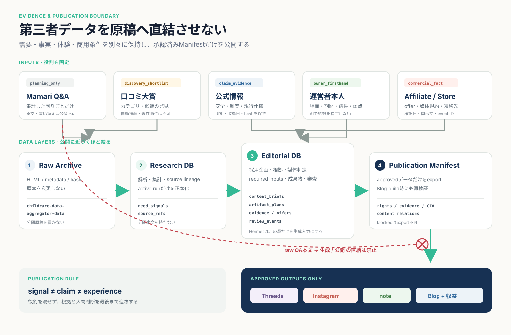
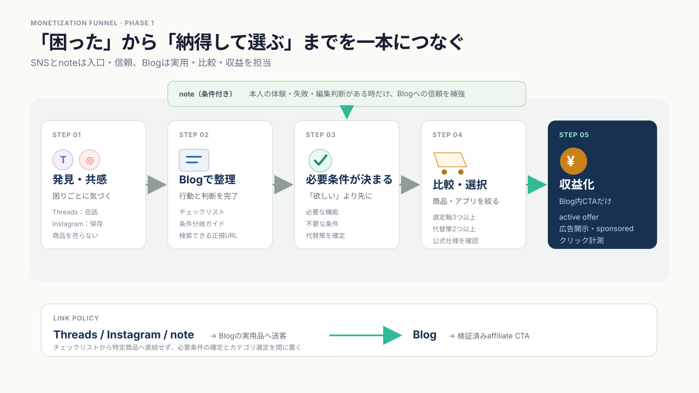

Research → Editorial → Revenue
コンテンツデータ収集から
収益化まで
過去のやりとりと既存資料をたどり、すくリスが第三者データをどう扱い、 どこで人が判断し、何をブログ・SNS・noteへ出し、どう収益へつなぐかを一つに統合しました。
結論：原文から記事を作る工程ではない
中心にあるのは、役割の違う情報を混ぜずに管理し、公開できる根拠だけで独自コンテンツを組み立てることです。
媒体より先に企画を決める
Threads、Instagram、note、Blogを最初から一式生成しない。読者の完了状態と根拠から、作れる型と媒体を個別判定します。
シグナル・事実・体験を分離する
MamariのQ&A、公式情報、本人の使用記録、広告案件は別レーンです。一つを別の役割へ読み替えません。
初期収益はBlogへ集約する
SNSは発見、noteは本人経験がある時の信頼形成、Blogは実用・選択・収益。直接アフィリエイトはBlogだけです。
過去のやりとりで変わった方針
現在のプロセスは、当初案をそのまま実装したものではありません。廃止された案と、今も有効な判断を分けます。
自由投稿ではなく、構造化された試行データを検討
一般ユーザーの自由形式育児ログは、比較の難しさと審査負担を理由に採用しない方針でした。
「困りごと投稿・横断比較DB」の企画を廃止
困りごと一覧、アンケート、試した方法の横断比較、外部家庭の回答収集をサイトの中心にする案は撤回されました。
サイトをチェックリスト中心へ整理
外部回答DBではなく、運営側が編集した記事・チェックリストを使って読者の行動を助ける構成へ移行しました。
収集・根拠・媒体振り分け・収益を別契約へ
一企画から全媒体を自動生成する旧six-pack方式を廃止し、Research DB、Editorial DB、Publication Manifest、Blog収益導線へ分ける設計が作られました。
現在地：収集済みと公開可能は別
データ量はありますが、候補・下書き・公開承認・広告接続は別の状態です。数字だけで「運用済み」と判断しません。
Mamari Research
分析済み解析済み質問本文。回答179,361件、商品候補棚1,121件。
企画候補44件はすべてdraft。長時間runningのimport run 8、未解決Award parse error 4件あり。note Market Research
収集済み候補646件のうち、有料記事100件を取得・解析。価格120、指標200、購入UI100観測。
販売根拠は1件だけ。市場ランキングや成功率を推定できる母集団ではありません。企業一次情報
収集停止登録済み企業記事ソース6件のうち、有効化済みは0件。
全件がterms pending／robots unknown。人間の確認前はCollectorを起動しません。GPT Article Manager
旧系統旧ワークフローの完了記事が1件。site／note／social画像あり。
2026-07-22作成。人手確認欄が残り、新しいPublication Manifestの合格実績ではありません。全体設計：4種類の入力を1つの企画へ
同じテーマでも、何を証明できる入力かが異なります。まずレーンを分け、Editorial Briefで初めて統合します。
需要シグナル
Mamari Q&A集計、SNS反応、note有料市場の公開メタデータ。困りごと・対象者・場面の候補を見つける。
公式根拠
公的機関、メーカー、規約確認済み企業記事。安全・制度・現行仕様・手順の事実を支える。
本人の一次体験
運営者自身の使用条件、期間、結果、失敗、改善。レビュー・note・個人ストーリーの唯一の土台。
商用オファー
提携先、遷移先、広告条件、開示文、計測ID。編集評価ではなく、CTAの準備状況だけを担う。
Editorial Brief
誰が／いつ／何に困る／何を終えたい、作るコンテンツ型、根拠参照、媒体適格性、足りない入力、レビュー状態を保持する正本。

実務プロセス：収集から公開まで8段階
プログラム、AI、人間の責任範囲を分けています。AIだけで次段階へ進む箇所はありません。
-
Discover
テーマを発見し、問題クラスターを作る
ProgramHumanInput / ActionMamariの反復シグナル、note市場の公開観測、SNS反応から、対象者・生活段階・場面・困りごとを候補化。
Gate単語の同居だけで企画にしない。「よくある」「売れている」は母集団と根拠なしに断定しない。
Output誰が／いつ／何に困る／何を終えたい、の4要素を持つ問題クラスター。
-
Policy
収集前に規約・robots・許可範囲を固定する
HumanProgramInput / Action人が利用規約とrobots.txtを確認し、URL、日時、確認者、hash、許可／禁止pathをDBへ記録。
Gateterms=allowed、robots=allowed、enabled=trueが揃わなければ収集しない。Output監査可能なSource Policyと、許可済みソースだけのURL inventory。
-
Collect
決定論的に取得し、原本と構造化データを分ける
ProgramInput / ActionURL queue、低速HTTP、claim/checkpoint、再開、重複排除。HTML・sidecar・SHA-256を原本保存し、ローカルParserで解析。
Gate内部API、ログイン、購入済み状態、非表示の有料本文を使わない。403/429で停止。価格やlikesは上書きせず時点観測。
Output取得元へ戻れるRaw Archive、構造化テーブル、parse error、観測履歴。
-
Validate
根拠候補を検証し、Research Bundleへまとめる
ProgramAIHumanInput / Action企業記事レーンでは最大30件の候補をホストモデルが支持範囲・関連性で判定。広告、逸話、製品固有主張、一般化を拒否。
Gate証拠文をAIが書き換えない。受理済み根拠だけでチェック項目を作り、各項目からURLと原文spanへ追跡できること。
Outputchildcare.research-bundle 1.0。Mamariの現行planning bundleは原文なし・source ID中心で、新仕様ではEditorial Briefへの移行対象。 -
Classify
読者の完了状態でコンテンツ型を一つ選ぶ
ProgramHumanInput / Actionprimary reader outcomeと必須条件を全ルールへ照合し、8種類のうち0件・1件・複数件を判定。
Gate0件は
insufficient、複数件はambiguousで停止。最初のキーワードや旧AIラベルを正解にしない。Output人が確認したcontent brief、content kind、根拠参照、足りない入力。
-
Route
媒体ごとに適格性と生成希望を分ける
ProgramHumanInput / ActionThreads、Instagram、note、Blogを個別に
eligible／blocked／not_applicable判定。Gate未指定媒体は
requested=false。本人経験がないnote／レビュー、商用準備がないCTAはblocked。Output媒体別artifact plan、blocked reason、required input、template ID。
-
Create
Article Managerで生成・修正し、人がGOを出す
AIHumanInput / ActionResearch Bundleを情報欠落なくimportし、eligibleかつrequestedな成果物だけをテンプレートで生成。修正、画像生成、再適用を行う。
Gate権利、privacy、fact、experience、editorial、commercial、publishを人が確認。Article Manager自身は公開しない。
Output承認済みartifactと、公開に必要な根拠・レビュー状態を持つPublication Manifest。
-
Publish
Blogで公開・収益化し、計測を次の企画へ戻す
ProgramHumanInput / Actionmy-blogはapproved manifestだけをbuild。SNS・noteからBlogへ送客し、必要条件の整理後に検証済みofferを提示。
Gateoffer、開示、
rel="sponsored"、計測ID、最新の商品条件が欠ければBlog buildを拒否。Output公開記事、SNS配布物、affiliate click／CVR／収益データ、改善用の反応シグナル。
データ利用ルールと媒体契約
「取得できる」と「公開に使える」は同義ではありません。入力ごとに許可用途と禁止用途を固定します。
| 入力 | 許可する役割 | 公開に使える範囲 | 禁止 |
|---|---|---|---|
| Mamari Q&A | 困りごと・対象者・場面の内部シグナル | 原文を含まない企画候補 | 転載、言い換え、体験談化、助言・効果・人気の根拠 |
| Mamari口コミ大賞 | 商品カテゴリと候補棚 | 内部shortlist | 自動推薦、現行No.1、本人評価 |
| note市場データ | 価格帯、テーマ、販売表示、作者属性の市場観測 | coverageとbias付き集計 | 本文転用、売上ランキング、市場全体の成功率 |
| 公的・メーカー公式 | 安全、制度、仕様、現行事実 | 根拠を付けた説明・比較表の事実 | 大量転載、メーカー文言の流用、独立評価の代用 |
| 運営者本人の記録 | 一次体験、編集過程 | review、note、personal story | 未体験範囲への一般化、AIによる架空の感情・会話 |
| アフィリエイト情報 | リンク、取引条件、開示 | Blog CTA | 編集評価、効果・安全性の根拠 |
8つのcontent kind
problem_prompt未知条件を一問で回収する。
action_checklist複数の行動を完了／未完了で終える。
decision_guide条件から方針・手段を一つ選ぶ。
product_selection_guide必要条件を持ち、商品・アプリ候補を絞る。
first_hand_review本人使用の条件・結果から適合を判断する。
evidence_explainer一次情報の意味・適用範囲・限界を理解する。
personal_story本人の試行錯誤と学びを時間軸で理解する。
update_notice変更点を知り、更新後の正規コンテンツへ移る。
媒体ごとの役割
| 媒体 | 主な役割 | CTA | 主KPI | 直接affiliate |
|---|---|---|---|---|
| Threads | 問い、共感、未知条件の回収 | Blogへ | 意味のある返信、Blog遷移 | しない |
| 保存しやすい一覧・判断軸 | profile／Blogへ | 保存率、profile遷移 | しない | |
| note | 本人経験、編集判断、制作背景 | 末尾でBlogへ1回 | 読了、Blog遷移 | しない |
| Blog | 検索、実用、条件整理、選択、収益 | 関連コンテンツ／検証済みoffer | 完了率、affiliate click、CVR | する |
実データ事例：質問1件は、そのまま記事にならない
既存ケース資料では、Mamari質問24893911を原点に、ベビーカー選びの確認用成果物まで変換しています。
- 01原本とDBを照合原本HTML、取得情報、質問IDが同じ1件を指すことを確認。
- 02質問内の二つの困りごとを分離質問文の言い換え記事ではなく、分析対象を分ける。
- 03関連候補8件と比較同じ目的かを一組ずつ確認し、目的が一致する5質問をクラスター化。
- 04件数と回答状況を集計原文を公開せず、企画を選ぶための内部シグナルへ変換。
- 05公式仕様を追加メーカー公式の対象月齢・重量・仕様を別根拠として接続。
- 06読者の完了状態を決定「今買う／B型まで待つ／試して決める」を条件で選ぶ設計書にする。
- 07content kindを選定記事型はselection guide。本人使用がないためfirst-hand reviewにはしない。
- 08媒体別に生成可否を決定Blog、Instagram、Threadsを作成。本人経験がないnoteは停止。
- 09確認用成果物を出力Blog本文、5項目のチェックリスト、Instagram 1枚、Threads投稿文。
収益化：商品へ急がず、必要条件を先に決める
チェックリストから商品リンクへ直結させません。読者が自分の条件を整理した後に、選定ガイドと検証済みofferへ進みます。
発見・共感
Threads／Instagramで具体的な場面と問いに出会う。
実用
Blogのチェックリストや判断ガイドで行動を進める。
条件の確定
必要な機能、不要な条件、利用場面を言語化する。
選択
商品／アプリの選び方、比較、本人レビューへ進む。
収益
条件が合う時だけ、検証済みアフィリエイトCTAを選ぶ。
CTAを出す条件
- activeなoffer
- 媒体上の提携可否
- 開示文と広告表示
rel="sponsored"- click event ID
公開直前の再確認
- 商品・アプリの現行仕様
- 価格・提供条件
- 遷移先と在庫／配布状態
- facts checked at
- 記事と体験表現の整合
追う数字
- checklist start／complete
- related content click
- affiliate click
- offer別CVR
- 収益／1,000 sessions

未接続部分と、実運用へ進む順番
今は「材料がない」のではなく、公開契約と商用ゲートがつながっていない状態です。実装順を崩すと、根拠や権利の境界が再び曖昧になります。
-
要対応
既存Research DBの状態を正常化する
runningのimport run 8を調査し、Award parse error 4件を解消または既知エラーとして固定。candidate 44件はdraftのまま扱う。
-
0 / 6
企業一次情報ソースを人が審査する
6ソースの利用規約・robots・許可pathをレビュー。allowedになったソースだけで小さなEvidence Runを行う。
-
設計のみ
Editorial DB・分類器・媒体適格性を実装する
8 content kinds、分類停止条件、artifact plan、review event、offer、source lineageを正本化。暗黙のDB書込APIを分離する。
-
未接続
Publication ManifestとBlog build gateを接続する
raw原文、未承認レビュー、期限切れfact、未整備CTA、人間未確認の一人称表現をbuild時に拒否する。
-
案件なし
アフィリエイトoffer・開示・計測を実装する
Blogだけに商用CTAを置き、広告開示、sponsored属性、campaign／offer ID、click／CVRを一続きにする。
-
未実施
1テーマのパイロットを本番で一周させる
「生後0〜3か月の短時間外出」など一つに絞り、発見→根拠→生成→人間承認→公開→計測を通してから横展開する。
調査した既存資料と証拠
既存HTMLは削除・上書きせず、この統合版から参照できるようにしています。詳細な仕様や実データは元資料を正本として確認してください。
| 資料 | 時点 | このHTMLで使った範囲 |
|---|---|---|
| コンテンツ戦略HTMLdocs/content-strategy/index.html | 2026-08-13 | 媒体定義、収益導線、データ役割、RDB構成、実装順。 |
| 実データケースHTMLdocs/content-strategy-case-study/index.html | 2026-08-14 | Mamari質問24893911から確認用成果物までの18段階と未実施範囲。 |
| コンテンツ戦略・媒体振り分け仕様docs/content-strategy-routing-spec.md | v1.1 draft | 8 content kinds、eligibility、Editorial DB、Manifest、CTA、KPI。 |
| note育児系有料市場調査 実装計画docs/note-parenting-paid-market-research-implementation-plan.md | 2026-08-20 | policy gate、取得境界、Evidenceモデル、市場分析のバイアス。 |
| note／Mamari 研究DB定義docs/note-mamari-db-definition-and-samples.md | 2026-08-23 | 現行スキーマ、件数、Raw Archive、時点観測、運用上の注意。 |
| ctx 過去セッション検索 | 2026-07 | 自由投稿を採用しない判断、困りごと比較DBの廃止、チェックリスト中心への移行。 |
| プラグイン読み取り結果 | 2026-08-23 | Mamariテーブル件数、候補状態、企業ソースpolicy状態、Article Manager記事数。 |